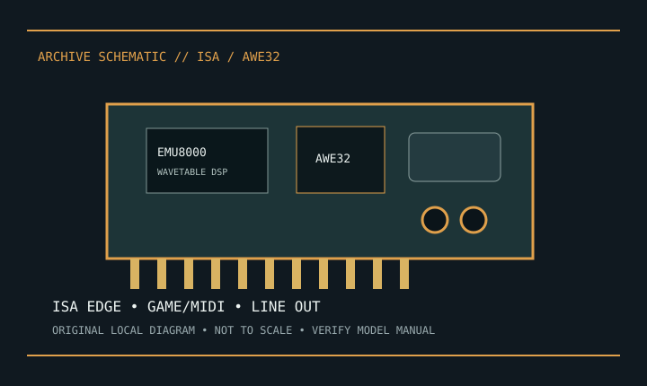

[ INDIVIDUAL COMPONENT // SOUND HARDWARE ]
Creative Sound Blaster AWE32 (CT2760)
AWE32 PnP CT2760 is an ISA-era Sound Blaster with Creative AWE wavetable architecture. Scope here is only a board actually marked CT2760; memory, headers, and options must be confirmed on the specimen.

Model-specific specifications
| Product | Creative Sound Blaster AWE32 Plug and Play, CT2760 model; check label/revision. |
|---|---|
| Bus | 16-bit ISA; Plug and Play resource assignment depends on host BIOS and legacy configuration support. |
| I/O | The AWE32 documentation describes microphone, line-in, line-out and speaker-out jacks, a 15-pin game/MIDI port, internal CD-audio and auxiliary headers, and CD-ROM interfaces. Confirm which connectors are actually fitted on this CT2760 revision. |
| Audio conversion | 16-bit stereo PCM audio; the AWE32 documentation lists rates up to 44.1 kHz. Exact playback/recording modes depend on the selected driver and operating mode. |
| Synthesis | EMU8000 AWE wavetable synthesis and Sound Blaster-compatible audio functions are documented for the AWE32. Do not infer installed sample RAM or optional chips from the product-family name. |
| Software | Creative legacy archive is the source for period DOS/Windows setup. Current OS support is not implied. |
| Power | ISA slot-powered board; no phantom-powered microphone input is documented. Never hot-plug; confirm host slot/resources. |
Compatibility & preservation
Record board label, options, jumpers, memory chips, and internal audio cables before removal. ISA PnP may require period BIOS/configuration tools; preserve a working DOS/Windows setup and retain its exact driver package.
- Photograph the model/revision label, connector panel, and installed/bundled accessories before service.
- Retain manufacturer manuals, original driver/firmware packages, and known-working configuration notes with the hardware.
- Use the specified signal level, connector wiring, and power requirements; connector fit alone does not prove compatibility.
Manufacturer sources
- Creative Support — Sound Blaster legacy archiveManufacturer product-support index; locate the AWE32 CT2760 manual/software using the physical model number.
- Creative SupportManufacturer archive for legacy manuals and downloads; preserve the CT2760 document with the card.